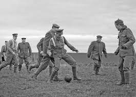
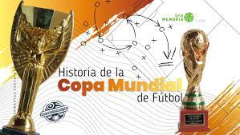

- Orígenes Primitivos del Fútbol
- La Copa Mundial de la FIFA
- La Época de los "Galácticos" del Real Madrid
Los orígenes del fútbol se remontan a prácticas antiguas que involucraban el uso de los pies para controlar una pelota. Aunque diversas culturas tenían sus propias versiones del juego, fue en el siglo XIX en Inglaterra donde se establecieron las primeras reglas modernas. La transición de juegos primitivos a un deporte organizado marcó el comienzo de la fascinante evolución del fútbol.

En 1930, se inauguró la Copa Mundial de la FIFA, convirtiéndose en el torneo internacional más prestigioso del fútbol. Desde entonces, cada cuatro años, equipos de todo el mundo se reúnen para competir por el codiciado trofeo. Este evento no solo ha sido testigo de momentos históricos y emocionantes gestas deportivas, sino que también ha contribuido a la globalización y popularización del fútbol a escala mundial.

A principios del siglo XXI, el Real Madrid vivió una era dorada conocida como la de los "Galácticos". Bajo la presidencia de Florentino Pérez, el club español atrajo a estrellas de talla mundial como Zinedine Zidane, Luis Figo y Ronaldo Nazário. Este período no solo se destacó por el éxito en el campo, incluyendo la conquista de la Liga de Campeones de la UEFA, sino que también cambió la dinámica del mercado de fichajes y la percepción del fútbol como un espectáculo global.